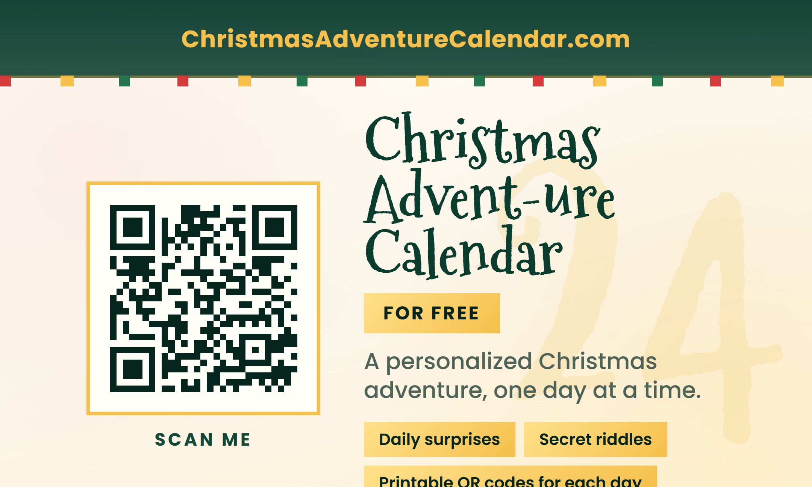
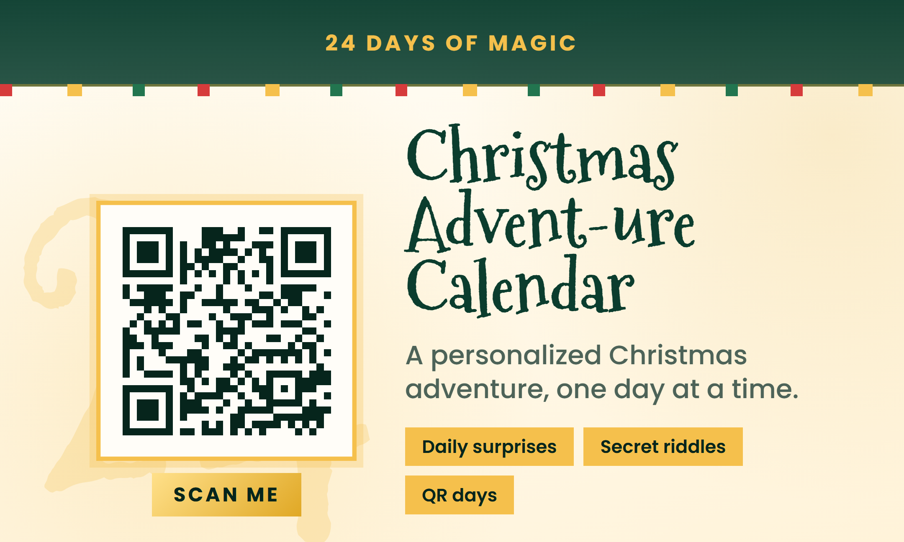
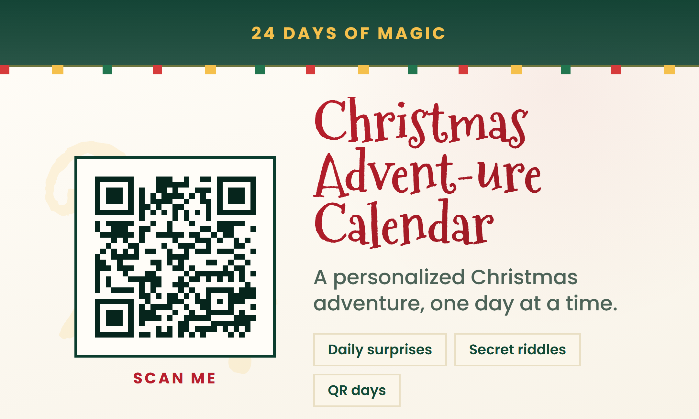
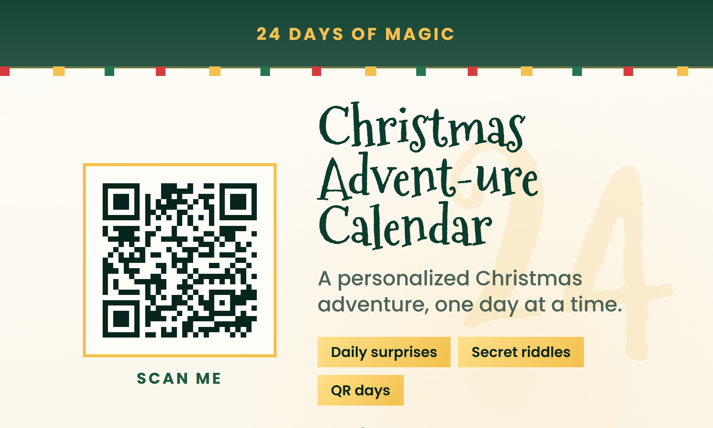

Same bones as the dark Scan First card you liked: big QR left, brand + chips right, “Scan me.”
Light full-bleed field (not a floating #2-style panel), ribbon top, soft gold 24, roomy edges,
URL ChristmasAdventureCalendar.com.
Skipped the #1 / #2 approaches on purpose. These should read as “light #3 + ribbon.”

A. Light Scan First — Straight #3 layout on a full-bleed cream field; URL in the ribbon header
Print file: A-light-scan-first.pdf

B. Gold Pulse — #3 bones with stronger gold frame, badge SCAN ME, warmer 24
Print file: B-gold-pulse.pdf

C. Holly Scan — #3 layout with site holly-red title; quiet gold 24 behind QR
Print file: C-holly-scan.pdf

D. Wide Scan — #3 with the most edge breathing room and largest URL
Print file: D-wide-scan.pdf